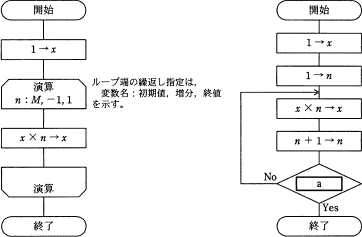

応用情報技術者 平成22年秋期 午前問7
午前問7
正の整数Mに対して，次の二つの流れ図に示すアルゴリズムを実行したとき，結果xの値が等しくなるようにしたい。a に入れる条件として，適切なものはどれか。

- [この問題の出題歴]
- ｿﾌﾄｳｪｱ開発技術者 H18春 問14
分類
テクノロジ系 >> アルゴリズムとプログラミング >> アルゴリズム
正解
ウ
解説
二つのアルゴリズムで共通の M は正の整数という条件が問題文に示されているので、Mに適当な数値を当てはめて解いてみることにします。
数字は何でもいいのですが今回は M に 2 を代入してみます。解き方としてはまず左のアルゴリズムを解き、その結果の x の値が右の式でも出力される条件はどれかを考えていくことになります。
[左の流れ図]
左の流れ図をトレースしてみると、結果xの値は 2 になることがわかります。
[右の流れ図]
どの選択肢の条件でもここまでは同じです。後の部分は選択肢の条件ごとに結果 xを見ていきましょう。
数字は何でもいいのですが今回は M に 2 を代入してみます。解き方としてはまず左のアルゴリズムを解き、その結果の x の値が右の式でも出力される条件はどれかを考えていくことになります。
[左の流れ図]
| <<開始>> | |
| 1 → x | //x=1 |
| ループ条件 n:2 増分 -1、n=1で終了 | |
| x×n → x (1×2 →x) | //x=2 |
| ループ先頭に戻る n−1 → n | //n=1 |
| n=1 になったのでループ終了 | |
| <<終了>> | //x=2 |
[右の流れ図]
| <<開始>> | |
| 1→x | //x=1 |
| 1 → n | //n=1 |
| x×n → x(1 × 1 →x) | //x=1 |
| n＋1 → n (1＋1 →n) | //n=2 |
- (分岐条件 n＜M)
n＜M (2＜2) は No →ループ先頭へ戻る。以後ループ内で nの値は加算されていくだけなので (n ＜ M)の条件を満たすことは永遠になく無限ループとなってしまいます。 - (分岐条件 n ＞ M -1)
n＞M−1 (2＞2−1) は Yes →流れ図は終了する。 結果xの値は 1 で、左の流れ図とは異なる値となる。 - (分岐条件 n＞M)
結果xの値は 2で、左の流れ図と同じ値になる。n＞M (2＞2) は No →ループ先頭へ戻る。 //x=1 x×n → x (1×2 →x) //x=2 n＋1 → n (2＋1 →n) //n=3 n＞M (3＞2) は Yes →流れ図は終了する。 //x=2 - (分岐条件 n＞M＋1)
結果xの値は 6 で、左の流れ図とは異なる結果となる。n＞M＋1 (2＞2＋1) は No →ループ先頭へ戻る。 //x=1 x×n → x (1×2 →x) //x=2 n＋1 → n (2＋1 →n) //n=3 n＞M＋1 (3＞2+1) は No →ループ先頭へ戻る。 //x=2 x×n → x (2×3 →x) //x=6 n＋1 → n (3＋1 →n) //n=4 n＞M＋1 (4＞2＋1) は Yes →流れ図は終了する。 //x=6